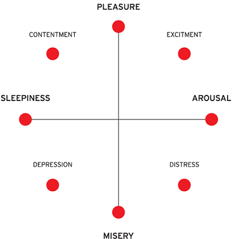

How it works
In each question you will see the the text line in different fonts "Grumpy wizards make toxic brew for the evil Queen and Jack". Also there will be a an
image where you will need to click with your mouse to select which emotion you think it represents the closest according to your opinion(there is no right answer,
you can click between emtions, anywhere you wanrt). After you select your answer, just click next, and you will get a new font.
Example:
Grumpy wizards make toxic brew for the evil Queen and Jack
